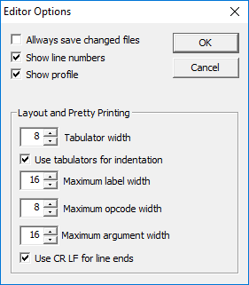

You reach the MMIX editor options through the Options menu.
If this box is checked, the edit window will display line numbers (in black) in the left margin.
If this box is checked, the edit window will display a Profile in the left margin. The profile shows (in blue) for each line how often it was executed .
With this control you can set size of the tabulator. For example, setting it to eight means that one tabulator takes up the same space as eight ordinary characters.
If this box is checked, the Indent command from the Edit Menu will use Tabulators to achieve indentation. Otherwise, space characters are used.
The Indent command from the Edit Menu will first measure the size of all the labels. It will then adjust the indentation of all opcodes (and indented comments) to be just one space or tabulator character larger than the largest label. Since this might lead to an unreasonable large indentation, this control can be used to set a maximum width for the this indentation. Labels that are longer will then extend into the opcode column and will be seaprated from the opcode by a single space or tabulator character.
This control has the same effect on the opcode column as the previous control has on the label column (see above).
This control has the same effect on the argument column as the two previous controls hae on the label and opcode columns (see above).
If this box is checked, the Indent command from the Edit Menu will use the combination of a Carriage Return (CR) and Line Feed (LF) character to terminate lines. This is the usual way to end lines under DOS or Windows. Otherwise, the Indent command will use a single Line Feed (LF) character which is the usual way to end a line under UNIX. Removing the CR characters is then just part of the Indent commands removal of white space at the end of a line.